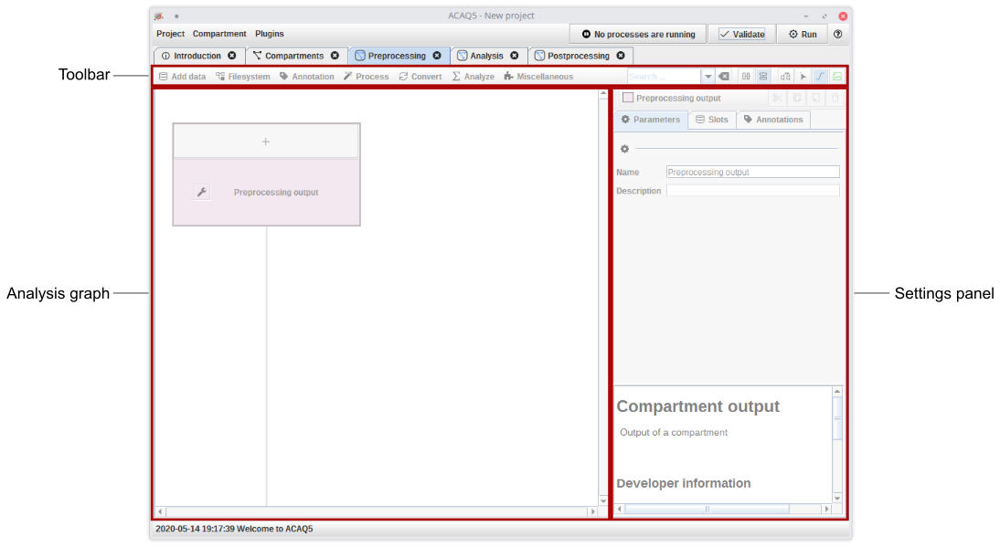
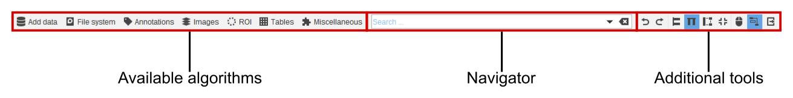

Pipeline editor
The graph editor (pipeline editor) allows you to edit the processing steps of a graph compartment. Its user interface is separated into three sections:
- The analysis graph contains the processing steps (also referred as algorithms)
- The settings panel shows the properties of the currently selected algorithms
- The toolbar allows you to add more algorithms into the graph, navigate to existing algorithms, change some behavior settings of the graph editor, and create screenshots

Analysis graph
The analysis graph contains algorithms that are represented by rectangles. The algorithm graph area will automatically grow depending on where you place the algorithms. Scroll bars will appear if the graph area is larger than the available screen size.
An alternative to using the scroll bars is to hold the middle mouse button while dragging the your mouse.
Algorithms read data from their input slots and output the results into the output slots. There are some algorithms that do not have input slots - they produce output based on their current parameters. The algorithm user interface has three sections:
- Input slots are located on the top of the algorithm UI. Each slot has a unique name that is displayed below the arrow. The arrow opens a menu that allows you to make/modify connections or change other options specific to the slot. Depending on the algorithm, a
+button is created that allows you to add more slots. - The drag area allows you to move the algorithm around. Move your mouse pointer over the area and drag your mouse while holding the 🖱 left mouse button. On clicking the button, a menu will open that contains some algorithm options. Alternatively you can right-click the drag area to open this menu.
- Output slots are located on the bottom and allow you to connect your output data to the input of another algorithm.
Any output data is always saved automatically by JIPipe. After generating the final output data, there is no need to connect it to any input.
Slot connections
You can connect two slots by clicking the or button of a slot and by selecting the source/target slot. Input slots can only receive one connection, while outputs can be distributed to as many inputs as you wish. The selection menu shows all available target slots and its sorted from the nearest to the slot that is furthest away.
A connection is shows as line between the connected slots. The color of the line indicates if this connection is valid or invalid depending on the data types of the source and target.
- A black line indicates that the data types match exactly.
- A blue line indicates that the types dont match exactly, but can be converted by JIPipe
- A red line indicates that the types are incompatible. You will probably get an error message during the calculation.
Hover with your mouse over a slot’s name to show information about its data type.
Slot options
The slot context menu opened by or contain additional entries to managing connections.
- Label this slot allows you to give the slot a custom name without changing the internal workings of the algorithm (As many algorithms are designed to adress specific slots). On selecting the entry, you can give a custom name that is displayed in cursive. To remove the custom label, label it with an empty text.
- Find matching algorithm … (only output slots) opens a tool that lists all compatible algorithms that can receive the output data as input.
- Depending on the algorithm, you can remove a slot from within this menu
Algorithm settings
The algorithm settings are displayed on the right-hand side and contain all settings of the selected algorithm. There are usually four categories:
- Parameters contains general parameters, like the name displayed in the drag area, and algorithm-specific parameters like thresholds, the selection of methods, and other parameters.
- Slots is an alternative to modifying slots via the algorithm UI. Here, you can also re-order slots.
- Annotations is an alternative to modifying slot annotations via the algorithm UI. See above for more info about annotations.
- Quick run is a tool to run the analysis only up to the selected algorithm. It allows you to try and compare multiple parameters without creating new nodes. See the testbench documentation for more info.
Toolbar
The toolbar contains functions to add new algorithms into the graph, navigate to existing algorithms or search the list of available algorithms, and functions to control the algorithm graph display.

- On the left-hand side you can find a menu containing all available algorithms. On selecting an entry, the corresponding algorithm is added to the graph.
- The navigator allows you to quickly navigate to an existing algorithm instance or create a new one. Just type one or multiple search terms into the field. On pressing the arrow down key on your keyboard, the first entry is selected.
- The view options control how the graph editor behaves and contains some additional utility functions.
View options
 and allow you to switch between horizontal and vertial view modes. This does not change the pipeline, but just how it is displayed in the editor. By default, a vertical view is enabled. If you prefer that data flows from left to right, choose the horizontal view mode.
and allow you to switch between horizontal and vertial view modes. This does not change the pipeline, but just how it is displayed in the editor. By default, a vertical view is enabled. If you prefer that data flows from left to right, choose the horizontal view mode. automatically aligns all nodes in the algorithm graph according to the algorithm by Sugiyama et. al
automatically aligns all nodes in the algorithm graph according to the algorithm by Sugiyama et. al allows you to change how dragging the middle mouse button changes the current view.
allows you to change how dragging the middle mouse button changes the current view. is enabled by default and makes it that nodes are automatically aligned on creating connections. This feature does not reorganize the whole graph, but only places the target algorithm to a location that better represents the data flow.
is enabled by default and makes it that nodes are automatically aligned on creating connections. This feature does not reorganize the whole graph, but only places the target algorithm to a location that better represents the data flow.- crops the graph area to the area taken by the algorithm nodes. Use this tool to find your nodes after scrolling too far away.
 creates a screenshot of the whole graph compartment that is currently being displayed.
creates a screenshot of the whole graph compartment that is currently being displayed.